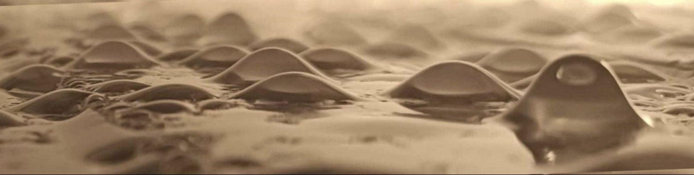
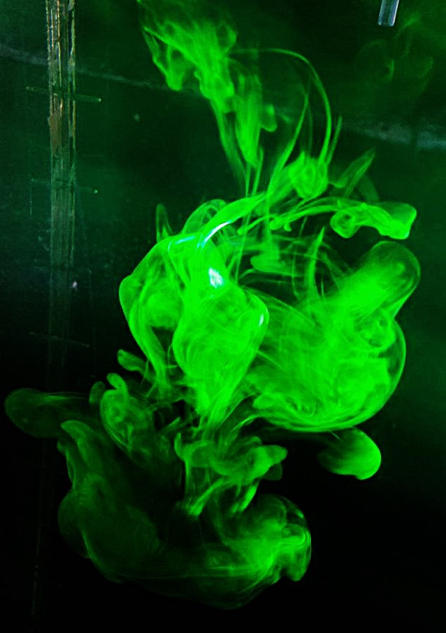
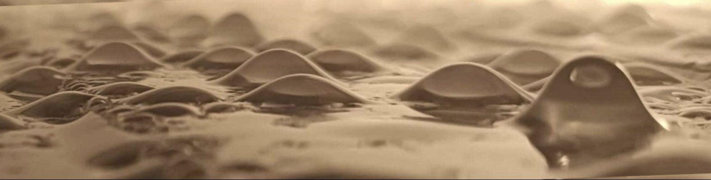
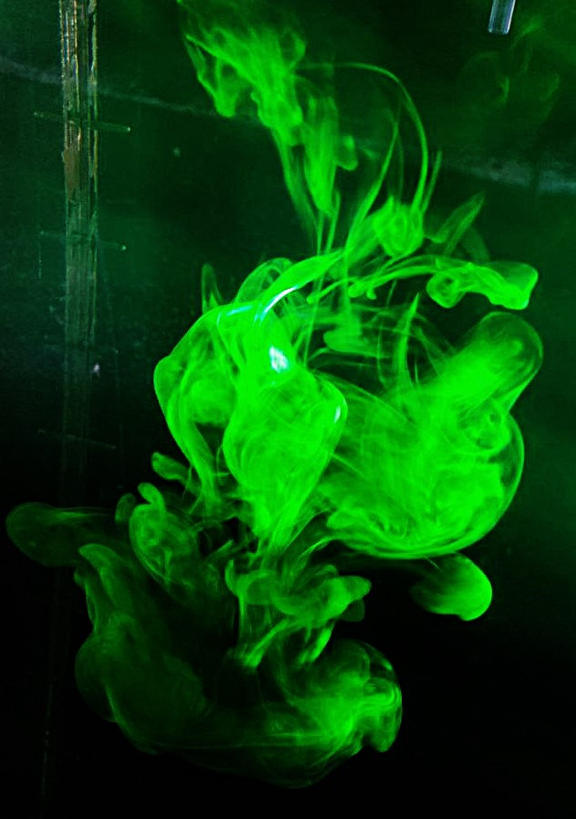

Hi! I'm P.G. Ledda
I am a fluid mechanics researcher at the University of Cagliari, Sardinia, Italy. I obtained my PhD degree at the Swiss Federal Institute of Technology in Lausanne (EPFL), Switzerland. I achieved the National Scientific qualification as associate professor in the Italian higher education system, for the disciplinary fields 09/A1 (Aeronautical and aerospace engineering and naval architecture) and 08/A1 (Hydraulics, hydrology, hydraulic and marine constructions).
During my PhD
My research involves different aspects of fluid mechanics. During my PhD, I extensively worked within the framework of flows past permeable bluff bodies (aerodynamic flows and falling objects) and pattern formation of thin liquid films.
I exploited several approaches based on hydrodynamic instability theory and asymptotic methods, combining them with numerical simulations and experimental campaigns to assess pattern formation and practical consequences on flows of interest, with applications spanning from fabrication of elastic curved shells and nanophotonic surfaces to the understanding of seed dispersal for environmental monitoring. These topics belong to the macro-theme of multiscale fluid mechanics, namely phenomena involving two or more well-separated spatial scales, which make the direct treatment challenging to interpret and/or generalize.
Current work
I am currently working at the University of Cagliari, DICAAR on different aspects of fluid mechanics. I am focused on biofluid mechanics, studying the flows generated during and after cardiovascular and ophthalmic surgeries in collaboration with medical professionals, employing both an experimental and a numerical approach, the latter based on OpenFOAM®.
I am involved in modeling the flow through thin porous membranes for filtration applications, using homogenization techniques to understand the passive and active transport of solvent and solute in biological and industrial osmotic membranes at low and moderate Reynolds numbers. Additionally, I study fluid-structure interaction in bio-inspired flexible valves at low Reynolds numbers, combining analytical, numerical, and experimental analyses to understand the onset of instability in Stokes flows.
Finally, I also work on fluid mechanics at high Reynolds numbers, investigating heat transport phenomena in indoor environments and the atmospheric flow around canopies in photovoltaic farms through RANS simulations and laboratory-scale experiments based on PIV, to assess the micrometeorological and landscape impact of their installation within the existing environment, also in collaboration with landscape architects.

 


